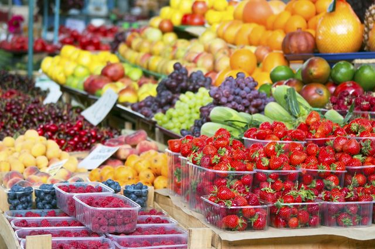

Овощи могут быть загрязнены микробами или химическими веществами, в период роста защищавшими растения от вредителей, поэтому обработку нужно проводить очень тщательно. Испорченные и несвежие экземпляры необходимо удалить. Как можно лучше следует обрабатывать клубнеплоды, обычно сильно загрязненные землей.
Особое внимание надо обратить на клубнеплоды (например, картофель), которые иногда используются вместе с кожурой. Их нужно мыть под струей проточной воды с применением щетки.
Кожица с овощей должна срезаться тонким слоем ножом из нержавеющей стали или желобковым ножом.
Перерабатывать овощи, предназначенные для приготовления соков, нужно непосредственно перед использованием. Нельзя держать очищенные овощи на воздухе или в воде — это быстро разрушает витамины.
Приготовить сок можно несколькими способами. Например, пропустить сырье через мясорубку или натереть на терке, а затем отжать через марлю, сложенную в 2–4 слоя. Однако гораздо удобнее пользоваться соковыжималкой, а зелень измельчать в блендере.
Ученые выяснили, что соки, полученные с помощью центрифуги или центробежной соковыжималки, ценнее, чем соки, приготовленные иными способами, например, с использованием пресса. В первом случае сок готовится в 3–4 раза быстрее, а значит, меньше окисляется. Целебные свойства такого сока выше, в него переходит намного больше биологически активных веществ.
Приготовленный сок желательно выпить сразу. Считается, что наибольшую лечебную силу он имеет в течение 20 минут. Однако, как уже упоминалось, такой сок, как свекольный, легче и приятнее пить после того, как он отстоялся в прохладном месте в течение 2 часов.
В консервированных соках витаминов меньше, чем в свежих. Консервирующим веществом для соков может служить водка или спирт, такие смеси нужно хранить в холодильнике.
Пить сок рекомендуется медленно, мелкими глотками или с использованием соломинки. Принимать сок желательно не позднее чем за 30 минут до еды. Нельзя подсаливать натуральный овощной сок (это относится и к приготовленному из помидоров).
Сок, приготовленный из зелени, нужно смешивать с другими овощными
соками в пропорции 1: 2. Не рекомендуется пить большими порциями соки лука, чеснока, хрена, редьки, редиса и других острых овощей. Лучше использовать их как добавку (по 1–2 чайные ложки) к другим сокам.
Если в состав смеси входит сок из свеклы, его количество обычно составляет одну треть от общего объема.